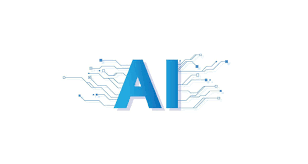

AI (هوش مصنوعی)
هوش مصنوعی شاخهای از علوم کامپیوتر است که به ساخت ماشینها و سیستمهایی میپردازد که میتوانند کارهایی را انجام دهند که معمولاً به هوش انسانی نیاز دارند. این شامل یادگیری، استدلال، ادراک، حل مسئله و حتی خلاقیت میشود.
هوش مصنوعی مدرن عمدتاً بر روی یادگیری ماشین (Machine Learning) و یادگیری عمیق (Deep Learning) متمرکز است، جایی که مدلها میتوانند از دادهها یاد بگیرند و بدون برنامهنویسی صریح برای هر task، پیشبینی و تصمیمگیری کنند.
هدف اصلی AI ایجاد سیستمهایی است که میتوانند به طور مستقل فکر کنند، یاد بگیرند و عمل کنند.
کاربردهای رایج هوش مصنوعی:
- دستیاران صوتی و چتباتها: مانند Siri, Alexa, Google Assistant و ChatGPT که از پردازش زبان طبیعی (NLP) استفاده میکنند.
- سیستمهای پیشنهادگر (Recommendation Systems): الگوریتمهای Netflix، Amazon و YouTube که محتوای شخصیسازی شده پیشنهاد میدهند.
- بینایی کامپیوتر (Computer Vision): تشخیص چهره در عکسها، تشخیص اشیاء در خودروهای خودران و تحلیل تصاویر پزشکی.
- پزشکی و سلامت: کمک در تشخیص بیماریها، کشف داروهای جدید و تجزیه و تحلیل تصاویر پزشکی مانند MRI و CT Scan.
- امنیت سایبری: شناسایی الگوهای حملات سایبری و ناهنجاریها در شبکه.
- اتوماسیون فرآیندها: خودکارسازی کارهای اداری تکراری و پیچیده (RPA).
- بازاریابی و فروش: پیشبینی رفتار مشتری، بهینهسازی کمپینهای تبلیغاتی و قیمتگذاری پویا.